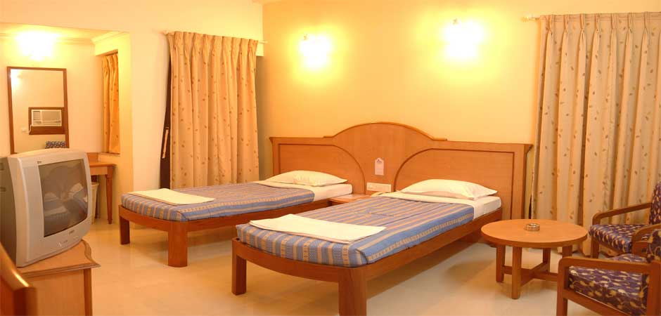
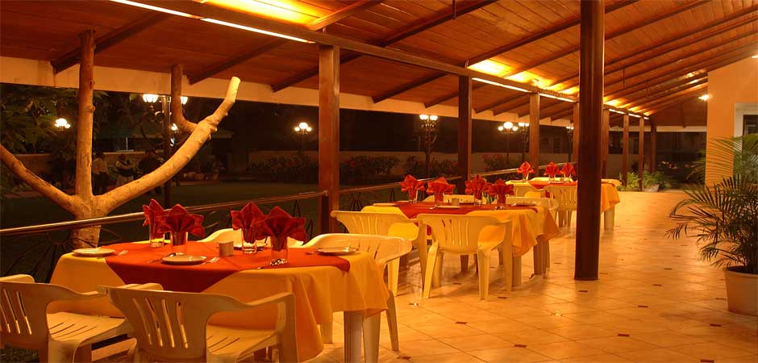
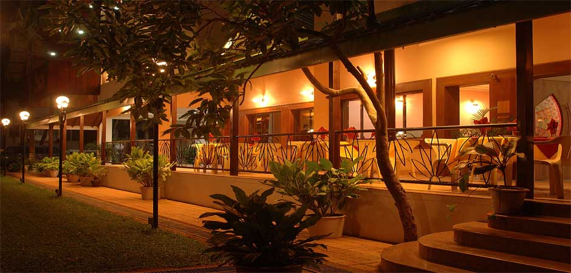

Address: 204, 'E' Ward,Near Aditya Corner, Tarabai Park, Kolhapur - 416003
Maharashtra,India.
Email : deepak@hotelwoodland.net, hotelwoodlandkop@rediffmail.com, info@hotelwoodland.net,
Phone : +90-231 - 2650941, 42, 43, 44
Fax: +91-231- 2650946
Website: www.hotelwoodland.net
Hotel Woodland witnesses this growth & warmth of the tourist for the past 45 Years due to its hospitality Quite & sceneric atmosphere though not far away from the business center of the city. Therefore Hotel Woodland is the first & foremost choice of the Business class as well as of the on coming Tourists we have got 39 well furnished with all modern amenities guest rooms . Hotel Woodland is also conveniently positioned five miniutes away from the Bus & Railway Station .



Comfort, relaxation and elegance are standard at our hotel.All our 39 rooms (Deluxe A.C Rooms,Executive A.C Rooms,Suite A.C Room,4 beded A.C Room and standard) reflect a sophisticated classical atmosphere, and function as a cozy and comfortable retreat.